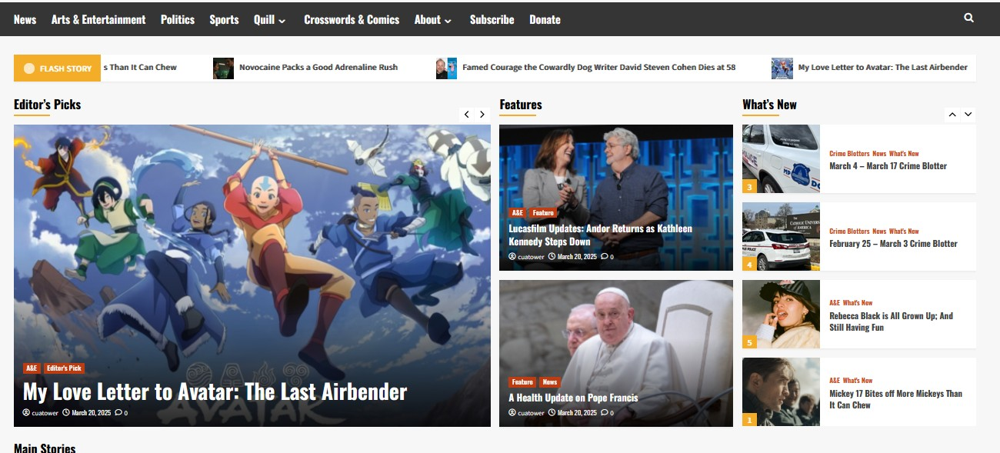
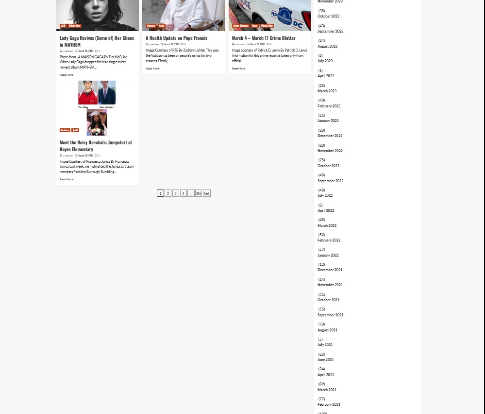

| Input | Output |
|---|---|
| Click on heading "Arts and Entertainment" | Redirects to new webpage in site. |
| In "Archives" sidebar: select "March 2020" | Redirects to new webpage showing all archives articles from March, 2020. |
| Click on heading "Subscribe" | Opens new page in different tab to subscribe to the paper. |
| Search "politics" in the search bar. | Pulls up all article headlines with the word "politics" in it. |
| Stengths |
|
|---|---|
|  | |
| Weaknesses |
|
|  |